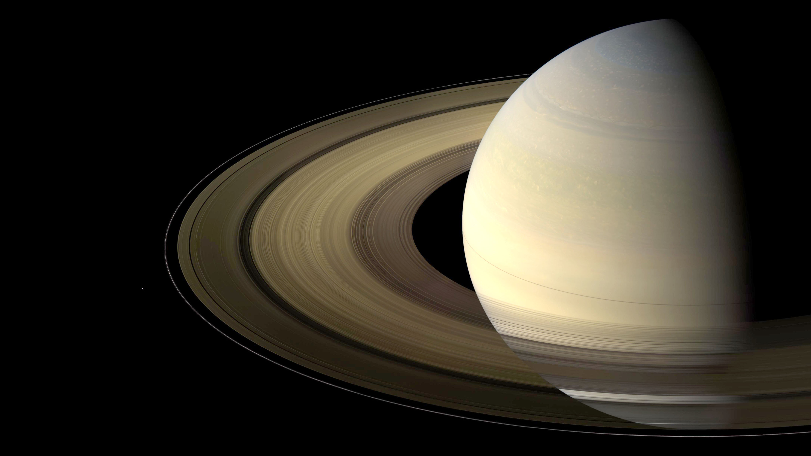

SOLAR SYSTEM

The Solar System is the gravitationally bound system of the Sun and the objects that orbit it, either directly or indirectly.Of the objects that orbit the Sun directly,
the largest are the eight planets,with the remainder being smaller objects, the dwarf planets and small Solar System bodies. Of the objects that orbit the Sun
indirectly—the moons—two are larger than the smallest planet, Mercury.
The Solar System formed 4.6 billion years ago from the gravitational collapse of a giant interstellar molecular cloud. The vast majority of the system's mass is in
the Sun, with the majority of the remaining mass contained in Jupiter. The four smaller inner planets, Mercury, Venus, Earth and Mars, are terrestrial planets, being
primarily composed of rock and metal. The four outer planets are giant planets, being substantially more massive than the terrestrials. The two largest planets, Jupiter
and Saturn, are gas giants, being composed mainly of hydrogen and helium; the two outermost planets, Uranus and Neptune, are ice giants, being composed mostly of substances
with relatively high melting points compared with hydrogen and helium, called volatiles, such as water, ammonia and methane. All eight planets have almost circular orbits that
lie within a nearly flat disc called the ecliptic.
The Solar System also contains smaller objects.The asteroid belt, which lies between the orbits of Mars and Jupiter, mostly contains objects composed, like the terrestrial
planets, of rock and metal. Beyond Neptune's orbit lie the Kuiper belt and scattered disc, which are populations of trans-Neptunian objects composed mostly of ices, and beyond
them a newly discovered population of sednoids. Within these populations, some objects are large enough to have rounded under their own gravity, though there is considerable
debate as to how many there will prove to be.Such objects are categorized as dwarf planets. The only certain dwarf planet is Pluto, with another trans-Neptunian object,
Eris, expected to be, and the asteroid Ceres at least close to being a dwarf planet.In addition to these two regions, various other small-body populations, including comets,
centaurs and interplanetary dust clouds, freely travel between regions. Six of the planets, the six largest possible dwarf planets, and many of the smaller bodies are orbited
by natural satellites, usually termed "moons" after the Moon. Each of the outer planets is encircled by planetary rings of dust and other small objects.
The solar wind, a stream of charged particles flowing outwards from the Sun, creates a bubble-like region in the interstellar medium known as the heliosphere.
The heliopause is the point at which pressure from the solar wind is equal to the opposing pressure of the interstellar medium; it extends out to the edge of the
scattered disc. The Oort cloud, which is thought to be the source for long-period comets, may also exist at a distance roughly a thousand times further than the heliosphere.
The Solar System is located in the Orion Arm, 26,000 light-years from the center of the Milky Way galaxy.
For most of history, humanity did not recognize or understand the concept of the Solar System. Most people up to the Late Middle Ages–Renaissance believed
Earth to be stationary at the centre of the universe and categorically different from the divine or ethereal objects that moved through the sky. Although the
Greek philosopher Aristarchus of Samos had speculated on a heliocentric reordering of the cosmos, Nicolaus Copernicus was the first to develop a mathematically predictive
heliocentric system.
In the 17th century, Galileo discovered that the Sun was marked with sunspots, and that Jupiter had four satellites in orbit around it.Christiaan Huygens followed on
from Galileo's discoveries by discovering Saturn's moon Titan and the shape of the rings of Saturn.Edmond Halley realised in 1705 that repeated sightings of a comet
were recording the same object, returning regularly once every 75–76 years. This was the first evidence that anything other than the planets orbited the Sun.
Around this time (1704), the term "Solar System" first appeared in English.In 1838, Friedrich Bessel successfully measured a stellar parallax, an apparent shift in
the position of a star created by Earth's motion around the Sun, providing the first direct, experimental proof of heliocentrism.Improvements in observational astronomy
and the use of uncrewed spacecraft have since enabled the detailed investigation of other bodies orbiting the Sun.
The principal component of the Solar System is the Sun, a G2 main-sequence star that contains 99.86% of the system's known mass and dominates it gravitationally.
The Sun's four largest orbiting bodies, the giant planets, account for 99% of the remaining mass, with Jupiter and Saturn together comprising more than 90%. The remaining
objects of the Solar System (including the four terrestrial planets, the dwarf planets, moons, asteroids, and comets) together comprise less than 0.002% of the Solar
System's total mass.
Most large objects in orbit around the Sun lie near the plane of Earth's orbit, known as the ecliptic. The planets are very close to the ecliptic, whereas comets
and Kuiper belt objects are frequently at significantly greater angles to it.As a result of the formation of the Solar System, planets (and most other objects) orbit
the Sun in the same direction that the Sun is rotating (counter-clockwise, as viewed from above Earth's north pole).There are exceptions, such as Halley's Comet. Most
of the larger moons orbit their planets in this prograde direction (with Triton being the largest retrograde exception) and most larger objects rotate themselves in the
same direction (with Venus being a notable retrograde exception).
The overall structure of the charted regions of the Solar System consists of the Sun, four relatively small inner planets surrounded by a belt of mostly
rocky asteroids, and four giant planets surrounded by the Kuiper belt of mostly icy objects. Astronomers sometimes informally divide this structure into separate regions.
The inner Solar System includes the four terrestrial planets and the asteroid belt. The outer Solar System is beyond the asteroids, including the four giant planets.
Since the discovery of the Kuiper belt, the outermost parts of the Solar System are considered a distinct region consisting of the objects beyond Neptune.
Most of the planets in the Solar System have secondary systems of their own, being orbited by planetary objects called natural satellites, or moons
(two of which, Titan and Ganymede, are larger than the planet Mercury), and, in the case of the four giant planets, by planetary rings, thin bands of tiny particles
that orbit them in unison. Most of the largest natural satellites are in synchronous rotation, with one face permanently turned toward their parent.
Kepler's laws of planetary motion describe the orbits of objects about the Sun. Following Kepler's laws, each object travels along an ellipse with the Sun at
one focus. Objects closer to the Sun (with smaller semi-major axes) travel more quickly because they are more affected by the Sun's gravity. On an elliptical orbit,
a body's distance from the Sun varies over the course of its year. A body's closest approach to the Sun is called its perihelion, whereas its most distant point from
the Sun is called its aphelion. The orbits of the planets are nearly circular, but many comets, asteroids, and Kuiper belt objects follow highly elliptical orbits.
The positions of the bodies in the Solar System can be predicted using numerical models.
Although the Sun dominates the system by mass, it accounts for only about 2% of the angular momentum.The planets, dominated by Jupiter, account for most of the rest
of the angular momentum due to the combination of their mass, orbit, and distance from the Sun, with a possibly significant contribution from comets.
The Sun, which comprises nearly all the matter in the Solar System, is composed of roughly 98% hydrogen and helium.Jupiter and Saturn, which comprise nearly all
the remaining matter, are also primarily composed of hydrogen and helium.A composition gradient exists in the Solar System, created by heat and light pressure
from the Sun; those objects closer to the Sun, which are more affected by heat and light pressure, are composed of elements with high melting points. Objects farther
from the Sun are composed largely of materials with lower melting points.The boundary in the Solar System beyond which those volatile substances could condense is known
as the frost line, and it lies at roughly 5 AU from the Sun.
The objects of the inner Solar System are composed mostly of rock,the collective name for compounds with high melting points, such as silicates, iron or nickel,
that remained solid under almost all conditions in the protoplanetary nebula.Jupiter and Saturn are composed mainly of gases, the astronomical term for materials
with extremely low melting points and high vapour pressure, such as hydrogen, helium, and neon, which were always in the gaseous phase in the nebula.
Ices, like water, methane, ammonia, hydrogen sulfide, and carbon dioxide,have melting points up to a few hundred kelvins.They can be found as ices, liquids,
or gases in various places in the Solar System, whereas in the nebula they were either in the solid or gaseous phase.Icy substances comprise the majority of
the satellites of the giant planets, as well as most of Uranus and Neptune (the so-called "ice giants") and the numerous small objects that lie beyond Neptune's orbit.
Together, gases and ices are referred to as volatiles.
The distance from Earth to the Sun is 1 astronomical unit [AU] (150,000,000 km; 93,000,000 mi). For comparison, the radius of the Sun is 0.0047 AU (700,000 km).
Thus, the Sun occupies 0.00001% (10−5 %) of the volume of a sphere with a radius the size of Earth's orbit, whereas Earth's volume is roughly one millionth (10−6)
that of the Sun. Jupiter, the largest planet, is 5.2 astronomical units (780,000,000 km) from the Sun and has a radius of 71,000 km (0.00047 AU), whereas the most
distant planet, Neptune, is 30 AU (4.5×109 km) from the Sun.
With a few exceptions, the farther a planet or belt is from the Sun, the larger the distance between its orbit and the orbit of the next nearer object to the Sun.
For example, Venus is approximately 0.33 AU farther out from the Sun than Mercury, whereas Saturn is 4.3 AU out from Jupiter, and Neptune lies 10.5 AU out from Uranus.
Attempts have been made to determine a relationship between these orbital distances (for example, the Titius–Bode law),but no such theory has been accepted.
The images at the beginning of this section show the orbits of the various constituents of the Solar System on different scales.
Some Solar System models attempt to convey the relative scales involved in the Solar System on human terms. Some are small in scale (and may be mechanical—called orreries)—
whereas others extend across cities or regional areas.The largest such scale model, the Sweden Solar System, uses the 110-metre (361 ft) Ericsson Globe in Stockholm as
its substitute Sun, and, following the scale, Jupiter is a 7.5-metre (25-foot) sphere at Stockholm Arlanda Airport, 40 km (25 mi) away, whereas the farthest current
object, Sedna, is a 10 cm (4 in) sphere in Luleå, 912 km (567 mi) away.
If the Sun–Neptune distance is scaled to 100 metres, then the Sun would be about 3 cm in diameter (roughly two-thirds the diameter of a golf ball),
the giant planets would be all smaller than about 3 mm, and Earth's diameter along with that of the other terrestrial planets would be smaller than a flea
(0.3 mm) at this scale.
solar system consists of:
8 planets,1 dwarf planets.
Planets:
- Mercury
- Venus
- Earth
- Mars
- Jupiter
- Saturn
- Uranus
- Neptune
Dwarf planets:
PLANETS:
1.Mercury
Mercury is the smallest and innermost planet in the Solar System. Its orbit around the Sun takes 87.97 Earth days, the shortest of all the planets in the Solar System.
It is named after the Greek god Hermes (Ερμής), translated into Latin Mercurius Mercury, god of commerce, messenger of the gods, mediator between gods and mortals.
Like Venus, Mercury orbits the Sun within Earth's orbit as an inferior planet, and its apparent distance from the Sun as viewed from Earth never exceeds 28°.
This proximity to the Sun means the planet can only be seen near the western horizon after sunset or eastern horizon before sunrise, usually in twilight.
At this time, it may appear as a bright star-like object, but is often far more difficult to observe than Venus. The planet telescopically displays the complete range
of phases, similar to Venus and the Moon, as it moves in its inner orbit relative to Earth, which recurs over its synodic period of approximately 116 days.
Mercury rotates in a way that is unique in the Solar System. It is tidally locked with the Sun in a 3:2 spin–orbit resonance,meaning that relative to the fixed stars,
it rotates on its axis exactly three times for every two revolutions it makes around the Sun.[a] As seen from the Sun, in a frame of reference that rotates with the
orbital motion, it appears to rotate only once every two Mercurian years. An observer on Mercury would therefore see only one day every two Mercurian years.
Mercury's axis has the smallest tilt of any of the Solar System's planets (about 1⁄30 degree). Its orbital eccentricity is the largest of all known planets in the
Solar System; at perihelion, Mercury's distance from the Sun is only about two-thirds (or 66%) of its distance at aphelion. Mercury's surface appears heavily cratered and
is similar in appearance to the Moon's, indicating that it has been geologically inactive for billions of years. Having almost no atmosphere to retain heat,
it has surface temperatures that vary diurnally more than on any other planet in the Solar System, ranging from 100 K (−173 °C; −280 °F) at night to 700 K (427 °C; 800 °F)
during the day across the equatorial regions.[18] The polar regions are constantly below 180 K (−93 °C; −136 °F). The planet has no known natural satellites.
Two spacecraft have visited Mercury: Mariner 10 flew by in 1974 and 1975; and MESSENGER, launched in 2004, orbited Mercury over 4,000 times in four years before
exhausting its fuel and crashing into the planet's surface on April 30, 2015. The BepiColombo spacecraft is planned to arrive at Mercury in 2025.
Mercury appears to have a solid silicate crust and mantle overlying a solid, iron sulfide outer core layer, a deeper liquid core layer, and a solid inner core.
Mercury is one of four terrestrial planets in the Solar System, and is a rocky body like Earth. It is the smallest planet in the Solar System, with an equatorial
radius of 2,439.7 kilometres (1,516.0 mi).Mercury is also smaller—albeit more massive—than the largest natural satellites in the Solar System, Ganymede and Titan.
Mercury consists of approximately 70% metallic and 30% silicate material.Mercury's density is the second highest in the Solar System at 5.427 g/cm3, only slightly less
than Earth's density of 5.515 g/cm3.If the effect of gravitational compression were to be factored out from both planets, the materials of which Mercury is made would be
denser than those of Earth, with an uncompressed density of 5.3 g/cm3 versus Earth's 4.4 g/cm3.
Mercury's density can be used to infer details of its inner structure. Although Earth's high density results appreciably from gravitational compression, particularly at the core,
Mercury is much smaller and its inner regions are not as compressed. Therefore, for it to have such a high density, its core must be large and rich in iron.
Geologists estimate that Mercury's core occupies about 55% of its volume; for Earth this proportion is 17%. Research published in 2007 suggests that Mercury has a molten core.
Surrounding the core is a 500–700 km (310–430 mi) mantle consisting of silicates.Based on data from the Mariner 10 mission and Earth-based observation, Mercury's crust is
estimated to be 35 km (22 mi) thick.One distinctive feature of Mercury's surface is the presence of numerous narrow ridges, extending up to several hundred kilometers in length.
It is thought that these were formed as Mercury's core and mantle cooled and contracted at a time when the crust had already solidified.
Mercury's core has a higher iron content than that of any other major planet in the Solar System, and several theories have been proposed to explain this.
The most widely accepted theory is that Mercury originally had a metal–silicate ratio similar to common chondrite meteorites, thought to be typical of the Solar System's
rocky matter, and a mass approximately 2.25 times its current mass. Early in the Solar System's history, Mercury may have been struck by a planetesimal of approximately 1/6 that
mass and several thousand kilometers across. The impact would have stripped away much of the original crust and mantle, leaving the core behind as a relatively major component.
A similar process, known as the giant impact hypothesis, has been proposed to explain the formation of the Moon.
Alternatively, Mercury may have formed from the solar nebula before the Sun's energy output had stabilized. It would initially have had twice its present mass,
but as the protosun contracted, temperatures near Mercury could have been between 2,500 and 3,500 K and possibly even as high as 10,000 K.Much of Mercury's surface rock
could have been vaporized at such temperatures, forming an atmosphere of "rock vapor" that could have been carried away by the solar wind.
A third hypothesis proposes that the solar nebula caused drag on the particles from which Mercury was accreting, which meant that lighter particles were lost from the
accreting material and not gathered by Mercury.Each hypothesis predicts a different surface composition, and there are two space missions set to make observations.
MESSENGER, which ended in 2015, found higher-than-expected potassium and sulfur levels on the surface, suggesting that the giant impact hypothesis and vaporization of the
crust and mantle did not occur because potassium and sulfur would have been driven off by the extreme heat of these events.BepiColombo, which will arrive at Mercury in 2025,
will make observations to test these hypotheses. The findings so far would seem to favor the third hypothesis; however, further analysis of the data is needed.
In 1859, the French mathematician and astronomer Urbain Le Verrier reported that the slow precession of Mercury's orbit around the Sun could not be completely explained
by Newtonian mechanics and perturbations by the known planets. He suggested, among possible explanations, that another planet (or perhaps instead a series of smaller 'corpuscules')
might exist in an orbit even closer to the Sun than that of Mercury, to account for this perturbation.(Other explanations considered included a slight oblateness of the Sun.)
The success of the search for Neptune based on its perturbations of the orbit of Uranus led astronomers to place faith in this possible explanation, and the hypothetical planet
was named Vulcan, but no such planet was ever found.
The perihelion precession of Mercury is 5,600 arcseconds (1.5556°) per century relative to Earth, or 574.10±0.65 arcseconds per century relative to the inertial ICRF.
Newtonian mechanics, taking into account all the effects from the other planets, predicts a precession of 5,557 arcseconds (1.5436°) per century.
In the early 20th century, Albert Einstein's general theory of relativity provided the explanation for the observed precession, by formalizing gravitation as being mediated
by the curvature of spacetime. The effect is small: just 42.98 arcseconds per century for Mercury; it therefore requires a little over twelve million orbits for a full excess turn.
Similar, but much smaller, effects exist for other Solar System bodies: 8.62 arcseconds per century for Venus, 3.84 for Earth, 1.35 for Mars, and 10.05 for 1566 Icarus.
2.Venus
Venus is the second planet from the Sun. It is named after the Roman goddess of love and beauty. As the second-brightest natural object in Earth's night sky after the Moon,
Venus can cast shadows and can be, on rare occasion, visible to the naked eye in broad daylight.Venus lies within Earth's orbit, and so never appears to venture far from the Sun,
either setting in the west just after dusk or rising in the east a bit before dawn. Venus orbits the Sun every 224.7 Earth days. With a rotation period of 243 Earth days,
it takes longer to rotate about its axis than any other planet in the Solar System by far, and does so in the opposite direction to all but Uranus (meaning the Sun rises in
the west and sets in the east). Venus does not have any moons, a distinction it shares only with Mercury among the planets in the Solar System.
Venus is a terrestrial planet and is sometimes called Earth's "sister planet" because of their similar size, mass, proximity to the Sun, and bulk composition.
It is radically different from Earth in other respects. It has the densest atmosphere of the four terrestrial planets, consisting of more than 96% carbon dioxide.
The atmospheric pressure at the planet's surface is about 92 times the sea level pressure of Earth, or roughly the pressure at 900 m (3,000 ft) underwater on Earth.
Venus has, by far, the hottest surface of any planet in the Solar System, with a mean temperature of 737 K (464 °C; 867 °F), even though Mercury is closer to the Sun.
Venus is shrouded by an opaque layer of highly reflective clouds of sulfuric acid, preventing its surface from being seen from space in visible light. It may have had water
oceans in the past,but these would have vaporized as the temperature rose due to a runaway greenhouse effect. The water has probably photodissociated, and the free hydrogen has
been swept into interplanetary space by the solar wind because of the lack of a planetary magnetic field. Venus' surface is a dry desertscape interspersed with slab-like
rocks and is periodically resurfaced by volcanism.
As one of the brightest objects in the sky, Venus has been a major fixture in human culture for as long as records have existed. It has been made sacred to
gods of many cultures, and has been a prime inspiration for writers and poets as the "morning star" and "evening star". Venus was the first planet to have its motions
plotted across the sky, as early as the second millennium BC.
Due to its proximity to Earth, Venus has been a prime target for early interplanetary exploration. It was the first planet beyond Earth visited by a spacecraft (Mariner 2 in 1962),
and the first to be successfully landed on (by Venera 7 in 1970). Venus' thick clouds render observation of its surface impossible in visible light, and the first detailed maps
did not emerge until the arrival of the Magellan orbiter in 1991. Plans have been proposed for rovers or more complex missions, but they are hindered by Venus' hostile surface
conditions.
The possibility of life on Venus has long been a topic of speculation, and in recent years has received active research. Following a 2019 observation that the light absorbance
of the upper cloud layers was consistent with the presence of microorganisms, a September 2020 article in Nature Astronomy announced the detection of phosphine gas, a biomarker,
in concentrations higher than can be explained by any known abiotic source. However, doubts have been cast on these observations due to data-processing issues and the failure
to detect phosphine at other wavelengths. By late October 2020, re-analysis of data with a proper subtraction of background did not result in the detection of phosphine.
Venus is one of the four terrestrial planets in the Solar System, meaning that it is a rocky body like Earth. It is similar to Earth in size and mass, and is often described
as Earth's "sister" or "twin". The diameter of Venus is 12,103.6 km (7,520.8 mi)—only 638.4 km (396.7 mi) less than Earth's—and its mass is 81.5% of Earth's. Conditions on the
Venusian surface differ radically from those on Earth because its dense atmosphere is 96.5% carbon dioxide, with most of the remaining 3.5% being nitrogen.
The Venusian surface was a subject of speculation until some of its secrets were revealed by planetary science in the 20th century. Venera landers in 1975 and 1982 returned
images of a surface covered in sediment and relatively angular rocks. The surface was mapped in detail by Magellan in 1990–91. The ground shows evidence of extensive volcanism,
and the sulfur in the atmosphere may indicate that there have been recent eruptions.
About 80% of the Venusian surface is covered by smooth, volcanic plains, consisting of 70% plains with wrinkle ridges and 10% smooth or lobate plains.
Two highland "continents" make up the rest of its surface area, one lying in the planet's northern hemisphere and the other just south of the equator. The northern
continent is called Ishtar Terra after Ishtar, the Babylonian goddess of love, and is about the size of Australia. Maxwell Montes, the highest mountain on Venus, lies on Ishtar
Terra. Its peak is 11 km (7 mi) above the Venusian average surface elevation. The southern continent is called Aphrodite Terra, after the Greek goddess of love, and is the
larger of the two highland regions at roughly the size of South America. A network of fractures and faults covers much of this area.
The absence of evidence of lava flow accompanying any of the visible calderas remains an enigma. The planet has few impact craters, demonstrating that the surface is relatively
young, at 300–600 million years old.Venus has some unique surface features in addition to the impact craters, mountains, and valleys commonly found on rocky planets.
Among these are flat-topped volcanic features called "farra", which look somewhat like pancakes and range in size from 20 to 50 km (12 to 31 mi) across, and from 100 to 1,000 m
(330 to 3,280 ft) high; radial, star-like fracture systems called "novae"; features with both radial and concentric fractures resembling spider webs, known as "arachnoids"; and
"coronae", circular rings of fractures sometimes surrounded by a depression. These features are volcanic in origin.
In 1967, Venera 4 found Venus' magnetic field to be much weaker than that of Earth. This magnetic field is induced by an interaction between the ionosphere and the solar wind,
rather than by an internal dynamo as in the Earth's core. Venus' small induced magnetosphere provides negligible protection to the atmosphere against cosmic radiation.
The lack of an intrinsic magnetic field at Venus was surprising, given that it is similar to Earth in size and was expected also to contain a dynamo at its core. A dynamo requires
three things: a conducting liquid, rotation, and convection. The core is thought to be electrically conductive and, although its rotation is often thought to be too slow,
simulations show it is adequate to produce a dynamo.This implies that the dynamo is missing because of a lack of convection in Venus' core. On Earth, convection occurs in the
liquid outer layer of the core because the bottom of the liquid layer is much higher in temperature than the top. On Venus, a global resurfacing event may have shut down plate
tectonics and led to a reduced heat flux through the crust. This would cause the mantle temperature to increase, thereby reducing the heat flux out of the core. As a result, no
internal geodynamo is available to drive a magnetic field. Instead, the heat from the core is reheating the crust.
One possibility is that Venus has no solid inner core, or that its core is not cooling, so that the entire liquid part of the core is at approximately the same temperature.
Another possibility is that its core has already completely solidified. The state of the core is highly dependent on the concentration of sulfur, which is unknown at present.
The weak magnetosphere around Venus means that the solar wind is interacting directly with its outer atmosphere. Here, ions of hydrogen and oxygen are being created by the
dissociation of neutral molecules from ultraviolet radiation. The solar wind then supplies energy that gives some of these ions sufficient velocity to escape Venus' gravity field.
This erosion process results in a steady loss of low-mass hydrogen, helium, and oxygen ions, whereas higher-mass molecules, such as carbon dioxide, are more likely to be retained.
Atmospheric erosion by the solar wind probably led to the loss of most of Venus' water during the first billion years after it formed.[115] The erosion has increased the ratio of
higher-mass deuterium to lower-mass hydrogen in the atmosphere 100 times compared to the rest of the solar system.
3.Earth

Earth is the third planet from the Sun and the only astronomical object known to harbor life. About 29% of Earth's surface is land consisting of continents and islands.
The remaining 71% is covered with water, mostly by oceans but also lakes, rivers and other fresh water, which together constitute the hydrosphere. Much of Earth's polar regions
are covered in ice. Earth's outer layer is divided into several rigid tectonic plates that migrate across the surface over many millions of years. Earth's interior remains active
with a solid iron inner core, a liquid outer core that generates Earth's magnetic field, and a convecting mantle that drives plate tectonics.
According to radiometric dating estimation and other evidence, Earth formed over 4.5 billion years ago. Within the first billion years of Earth's history, life appeared in the
oceans and began to affect Earth's atmosphere and surface, leading to the proliferation of anaerobic and, later, aerobic organisms. Some geological evidence indicates that life
may have arisen as early as 4.1 billion years ago. Since then, the combination of Earth's distance from the Sun, physical properties and geological history have allowed life to
evolve and thrive. In the history of life on Earth, biodiversity has gone through long periods of expansion, occasionally punctuated by mass extinctions. Over 99% of all species
that ever lived on Earth are extinct. Almost 8 billion humans live on Earth and depend on its biosphere and natural resources for their survival. Humans increasingly impact
Earth's hydrology, atmospheric processes and other life.
Earth's atmosphere consists mostly of nitrogen and oxygen. Tropical regions receive more energy from the Sun than polar regions, which is redistributed by atmospheric and
ocean circulation. Greenhouse gases also play an important role in regulating the surface temperature. A region's climate is not only determined by latitude, but also by its
proximity to moderating oceans and height among other factors. Extreme weather, such as tropical cyclones and heat waves, occurs in most areas and has a large impact on life.
Earth's gravity interacts with other objects in space, especially the Sun and the Moon, which is Earth's only natural satellite. Earth orbits around the Sun in about 365.25 days.
Earth's axis of rotation is tilted with respect to its orbital plane, producing seasons on Earth. The gravitational interaction between Earth and the Moon causes tides, stabilizes
Earth's orientation on its axis, and gradually slows its rotation. Earth is the densest planet in the Solar System and the largest and most massive of the four rocky planets.
Earth's atmosphere and oceans were formed by volcanic activity and outgassing. Water vapor from these sources condensed into the oceans, augmented by water and ice from
asteroids, protoplanets, and comets.Sufficient water to fill the oceans may have always been on the Earth since the beginning of the planet's formation. In this model,
atmospheric greenhouse gases kept the oceans from freezing when the newly forming Sun had only 70% of its current luminosity. By 3.5 Ga, Earth's magnetic field was established,
which helped prevent the atmosphere from being stripped away by the solar wind.
As the molten outer layer of Earth cooled it formed the first solid crust, which is thought to have been mafic in composition. The first continental crust, which was more
felsic in composition, formed by the partial melting of this mafic crust. The presence of grains of the mineral zircon of Hadean age in Eoarchean sedimentary rocks suggests that
at least some felsic crust existed as early as 4.4 Ga, only 140 Ma after Earth's formation. There are two main models of how this initial small volume of continental crust
evolved to reach its current abundance:(1) a relatively steady growth up to the present day, which is supported by the radiometric dating of continental crust globally and
(2) an initial rapid growth in the volume of continental crust during the Archean, forming the bulk of the continental crust that now exists, which is supported by isotopic
evidence from hafnium in zircons and neodymium in sedimentary rocks. The two models and the data that support them can be reconciled by large-scale recycling of the continental
crust, particularly during the early stages of Earth's history.
New continental crust forms as a result of plate tectonics, a process ultimately driven by the continuous loss of heat from Earth's interior. Over the period of hundreds of
millions of years, tectonic forces have caused areas of continental crust to group together to form supercontinents that have subsequently broken apart. At approximately 750 Ma,
one of the earliest known supercontinents, Rodinia, began to break apart. The continents later recombined to form Pannotia at 600–540 Ma, then finally Pangaea, which also began to
break apart at 180 Ma.
The most recent pattern of ice ages began about 40 Ma, and then intensified during the Pleistocene about 3 Ma. High- and middle-latitude regions have since undergone repeated
cycles of glaciation and thaw, repeating about every 21,000, 41,000 and 100,000 years. The Last Glacial Period, colloquially called the "last ice age", covered large parts
of the continents, up to the middle latitudes, in ice and ended about 11,700 years ago.
The atmospheric pressure at Earth's sea level averages 101.325 kPa (14.696 psi), with a scale height of about 8.5 km (5.3 mi). A dry atmosphere is composed of 78.084% nitrogen,
20.946% oxygen, 0.934% argon, and trace amounts of carbon dioxide and other gaseous molecules. Water vapor content varies between 0.01% and 4% but averages about 1%.
The height of the troposphere varies with latitude, ranging between 8 km (5 mi) at the poles to 17 km (11 mi) at the equator, with some variation resulting from weather and
seasonal factors.
Earth's biosphere has significantly altered its atmosphere. Oxygenic photosynthesis evolved 2.7 Gya, forming the primarily nitrogen–oxygen atmosphere of today.
This change enabled the proliferation of aerobic organisms and, indirectly, the formation of the ozone layer due to the subsequent conversion of atmospheric O2 into O
3. The ozone layer blocks ultraviolet solar radiation, permitting life on land.[193] Other atmospheric functions important to life include transporting water vapor,
providing useful gases, causing small meteors to burn up before they strike the surface, and moderating temperature.[194] This last phenomenon is known as the greenhouse
effect: trace molecules within the atmosphere serve to capture thermal energy emitted from the ground, thereby raising the average temperature. Water vapor, carbon dioxide,
methane, nitrous oxide, and ozone are the primary greenhouse gases in the atmosphere. Without this heat-retention effect, the average surface temperature would be −18 °C (0 °F),
in contrast to the current +15 °C (59 °F), and life on Earth probably would not exist in its current form.
4.Mars
Mars is the fourth planet from the Sun and the second-smallest planet in the Solar System, being larger than only Mercury. In English, Mars carries the name of the Roman god
of war and is often referred to as the "Red Planet". The latter refers to the effect of the iron oxide prevalent on Mars's surface, which gives it a reddish appearance
distinctive among the astronomical bodies visible to the naked eye. Mars is a terrestrial planet with a thin atmosphere, with surface features reminiscent of the impact
craters of the Moon and the valleys, deserts and polar ice caps of Earth.
The days and seasons are comparable to those of Earth, because the rotational period as well as the tilt of the rotational axis relative to the ecliptic plane are similar.
Mars is the site of Olympus Mons, the largest volcano and highest known mountain on any planet in the Solar System, and of Valles Marineris, one of the largest canyons in
the Solar System. The smooth Borealis basin in the northern hemisphere covers 40% of the planet and may be a giant impact feature. Mars has two moons, Phobos and Deimos,
which are small and irregularly shaped. These may be captured asteroids, similar to 5261 Eureka, a Mars trojan.
Mars has been explored by several uncrewed spacecraft. Mariner 4 was the first spacecraft to visit Mars; launched by NASA on 28 November 1964, it made its closest approach
to the planet on 15 July 1965. Mariner 4 detected the weak Martian radiation belt, measured at about 0.1% that of Earth, and captured the first images of another planet from
deep space. The Soviet Mars 3 mission included a lander, which achieved a soft landing in December 1971; however, contact was lost seconds after touchdown.
On 20 July 1976, Viking 1 performed the first successful landing on the Martian surface. On 4 July 1997, the Mars Pathfinder spacecraft landed on Mars and on 5 July
released its rover, Sojourner, the first robotic rover to operate on Mars.The Mars Express orbiter, the first European Space Agency (ESA) spacecraft to visit Mars,
arrived in orbit on 25 December 2003. In January 2004, the Mars Exploration Rovers, named Spirit and Opportunity, both landed on Mars. Spirit operated until 22 March 2010
and Opportunity lasted until 10 June 2018. On 24 September 2014, the Indian Space Research Organisation (ISRO) became the fourth space agency to visit Mars when its maiden
interplanetary mission, the Mars Orbiter Mission spacecraft, arrived in orbit.
There are investigations assessing the past habitability of Mars, as well as the possibility of extant life. Astrobiology missions are planned, including the Perseverance
and Rosalind Franklin rovers. Liquid water on the surface of Mars cannot exist due to low atmospheric pressure, which is less than 1% of the atmospheric pressure on Earth,
except at the lowest elevations for short periods. The two polar ice caps appear to be made largely of water.The volume of water ice in the south polar ice cap,
if melted, would be sufficient to cover the planetary surface to a depth of 11 metres (36 ft). In November 2016, NASA reported finding a large amount of underground ice in
the Utopia Planitia region. The volume of water detected has been estimated to be equivalent to the volume of water in Lake Superior.
Mars can easily be seen from Earth with the naked eye, as can its reddish coloring. Its apparent magnitude reaches −2.94, which is surpassed only by Venus, the Moon and
the Sun. Optical ground-based telescopes are typically limited to resolving features about 300 kilometres (190 mi) across when Earth and Mars are closest because of Earth's
atmosphere.
Mars is a terrestrial planet that consists of minerals containing silicon and oxygen, metals, and other elements that typically make up rock. The surface of Mars is
primarily composed of tholeiitic basalt, although parts are more silica-rich than typical basalt and may be similar to andesitic rocks on Earth or silica glass.
Regions of low albedo suggest concentrations of plagioclase feldspar, with northern low albedo regions displaying higher than normal concentrations of sheet silicates and
high-silicon glass. Parts of the southern highlands include detectable amounts of high-calcium pyroxenes. Localized concentrations of hematite and olivine have been found.
Much of the surface is deeply covered by finely grained iron(III) oxide dust.
Although Mars has no evidence of a structured global magnetic field,observations show that parts of the planet's crust have been magnetized, suggesting that alternating polarity
reversals of its dipole field have occurred in the past. This paleomagnetism of magnetically susceptible minerals is similar to the alternating bands found on Earth's ocean floors.
One theory, published in 1999 and re-examined in October 2005 (with the help of the Mars Global Surveyor), is that these bands suggest plate tectonic activity on Mars
four billion years ago, before the planetary dynamo ceased to function and the planet's magnetic field faded.
Liquid water cannot exist on the surface of Mars due to low atmospheric pressure, which is less than 1% that of Earth's, except at the lowest elevations for short periods.
The two polar ice caps appear to be made largely of water. The volume of water ice in the south polar ice cap, if melted, would be sufficient to cover the entire planetary
surface to a depth of 11 metres (36 ft). A permafrost mantle stretches from the pole to latitudes of about 60°. Large quantities of ice are thought to be trapped within the
thick cryosphere of Mars. Radar data from Mars Express and the Mars Reconnaissance Orbiter (MRO) show large quantities of ice at both poles (July 2005) and at
middle latitudes (November 2008). The Phoenix lander directly sampled water ice in shallow Martian soil on 31 July 2008.
Landforms visible on Mars strongly suggest that liquid water has existed on the planet's surface. Huge linear swathes of scoured ground, known as outflow channels,
cut across the surface in about 25 places. These are thought to be a record of erosion caused by the catastrophic release of water from subsurface aquifers, though some
of these structures have been hypothesized to result from the action of glaciers or lava. One of the larger examples, Ma'adim Vallis is 700 kilometres (430 mi) long,
much greater than the Grand Canyon, with a width of 20 kilometres (12 mi) and a depth of 2 kilometres (1.2 mi) in places. It is thought to have been carved by flowing water
early in Mars's history. The youngest of these channels are thought to have formed as recently as only a few million years ago. Elsewhere, particularly on the oldest areas of
the Martian surface, finer-scale, dendritic networks of valleys are spread across significant proportions of the landscape. Features of these valleys and their distribution
strongly imply that they were carved by runoff resulting from precipitation in early Mars history. Subsurface water flow and groundwater sapping may play important subsidiary
roles in some networks, but precipitation was probably the root cause of the incision in almost all cases.
Along crater and canyon walls, there are thousands of features that appear similar to terrestrial gullies. The gullies tend to be in the highlands of the southern hemisphere
and to face the Equator; all are poleward of 30° latitude. A number of authors have suggested that their formation process involves liquid water, probably from melting ice,
although others have argued for formation mechanisms involving carbon dioxide frost or the movement of dry dust.No partially degraded gullies have formed by weathering and no
superimposed impact craters have been observed, indicating that these are young features, possibly still active. Other geological features, such as deltas and alluvial fans
preserved in craters, are further evidence for warmer, wetter conditions at an interval or intervals in earlier Mars history.[103] Such conditions necessarily require the
widespread presence of crater lakes across a large proportion of the surface, for which there is independent mineralogical, sedimentological and geomorphological evidence.
5.Jupiter

Jupiter is the fifth planet from the Sun and the largest in the Solar System. It is a gas giant with a mass one-thousandth that of the Sun, but two-and-a-half times that
of all the other planets in the Solar System combined. Jupiter is one of the brightest objects visible to the naked eye in the night sky, and has been known to ancient
civilizations since before recorded history. It is named after the Roman god Jupiter. When viewed from Earth, Jupiter can be bright enough for its reflected light to cast
visible shadows, and is on average the third-brightest natural object in the night sky after the Moon and Venus.
Jupiter is primarily composed of hydrogen with a quarter of its mass being helium, though helium comprises only about a tenth of the number of molecules.
It may also have a rocky core of heavier elements, but like the other giant planets, Jupiter lacks a well-defined solid surface. Because of its rapid rotation,
the planet's shape is that of an oblate spheroid (it has a slight but noticeable bulge around the equator). The outer atmosphere is visibly segregated into several
bands at different latitudes, resulting in turbulence and storms along their interacting boundaries. A prominent result is the Great Red Spot, a giant storm that is known
to have existed since at least the 17th century when it was first seen by telescope. Surrounding Jupiter is a faint planetary ring system and a powerful magnetosphere.
Jupiter has 79 known moons, including the four large Galilean moons discovered by Galileo Galilei in 1610. Ganymede, the largest of these, has a diameter greater than that of
the planet Mercury.
Pioneer 10 was the first spacecraft to visit Jupiter, making its closest approach to the planet on December 4, 1973; Pioneer 10 identified plasma in Jupiter's
magnetic field and also found that Jupiter's magnetic tail was nearly 800 million kilometers long, covering the entire distance to Saturn. Jupiter has been explored on a
number of occasions by robotic spacecraft, beginning with the Pioneer and Voyager flyby missions from 1973 to 1979, and later by the Galileo orbiter, which arrived at Jupiter
in 1995. In late February 2007, Jupiter was visited by the New Horizons probe, which used Jupiter's gravity to increase its speed and bend its trajectory en route to Pluto.
The latest probe to visit the planet is Juno, which entered into orbit around Jupiter on July 4, 2016. Future targets for exploration in the Jupiter system include the
probable ice-covered liquid ocean of its moon Europa.
Jupiter is the only planet whose barycenter with the Sun lies outside the volume of the Sun, though by only 7% of the Sun's radius. The average distance between Jupiter
and the Sun is 778 million km (about 5.2 times the average distance between Earth and the Sun, or 5.2 AU) and it completes an orbit every 11.86 years. This is approximately
two-fifths the orbital period of Saturn, forming a near orbital resonance between the two largest planets in the Solar System. The elliptical orbit of Jupiter is inclined 1.31°
compared to Earth. Because the eccentricity of its orbit is 0.048, Jupiter's distance from the Sun varies by 75 million km between its nearest approach (perihelion) and furthest
distance (aphelion).
The axial tilt of Jupiter is relatively small: only 3.13°. As a result, it does not experience significant seasonal changes, in contrast to, for example, Earth and Mars.
Jupiter's rotation is the fastest of all the Solar System's planets, completing a rotation on its axis in slightly less than ten hours; this creates an equatorial bulge
easily seen through an Earth-based amateur telescope. The planet is shaped as an oblate spheroid, meaning that the diameter across its equator is longer than the diameter measured
between its poles. On Jupiter, the equatorial diameter is 9,275 km (5,763 mi) longer than the diameter measured through the poles.
Because Jupiter is not a solid body, its upper atmosphere undergoes differential rotation. The rotation of Jupiter's polar atmosphere is about 5 minutes longer than that
of the equatorial atmosphere; three systems are used as frames of reference, particularly when graphing the motion of atmospheric features. System I applies from the latitudes
10° N to 10° S; its period is the planet's shortest, at 9h 50m 30.0s. System II applies at all latitudes north and south of these; its period is 9h 55m 40.6s. System III was
first defined by radio astronomers, and corresponds to the rotation of the planet's magnetosphere; its period is Jupiter's official rotation.
6.Saturn

Saturn is the sixth planet from the Sun and the second-largest in the Solar System, after Jupiter. It is a gas giant with an average radius of about nine times that of Earth.
It only has one-eighth the average density of Earth; however, with its larger volume, Saturn is over 95 times more massive.Saturn is named after the Roman god of wealth and
agriculture; its astronomical symbol (♄) represents the god's sickle. The Romans named the seventh day of the week Saturday, Sāturni diēs ("Saturn's Day") no later than the
2nd century for the planet Saturn.
Saturn's interior is most likely composed of a core of iron–nickel and rock (silicon and oxygen compounds). Its core is surrounded by a deep layer of metallic hydrogen, an
intermediate layer of liquid hydrogen and liquid helium, and finally a gaseous outer layer. Saturn has a pale yellow hue due to ammonia crystals in its upper atmosphere.
An electrical current within the metallic hydrogen layer is thought to give rise to Saturn's planetary magnetic field, which is weaker than the Earth's, but has a magnetic
moment 580 times that of Earth due to Saturn's larger size. Saturn's magnetic field strength is around one-twentieth of Jupiter's. The outer atmosphere is generally bland
and lacking in contrast, although long-lived features can appear. Wind speeds on Saturn can reach 1,800 km/h (1,100 mph; 500 m/s), higher than on Jupiter, but not as high as
those on Neptune. In January 2019, astronomers reported that a day on the planet Saturn has been determined to be 10h 33m 38s + 1m 52s
− 1m 19s , based on studies of the planet's C Ring.
The planet's most famous feature is its prominent ring system, which is composed mostly of ice particles, with a smaller amount of rocky debris and dust.
At least 82 moons are known to orbit Saturn, of which 53 are officially named; this does not include the hundreds of moonlets in its rings. Titan, Saturn's largest moon,
and the second-largest in the Solar System, is larger than the planet Mercury, although less massive, and is the only moon in the Solar System to have a substantial atmosphere.
The average distance between Saturn and the Sun is over 1.4 billion kilometers (9 AU). With an average orbital speed of 9.68 km/s,
it takes Saturn 10,759 Earth days (or about 29 1⁄2 years) to finish one revolution around the Sun. As a consequence, it forms a near 5:2 mean-motion resonance with Jupiter.
The elliptical orbit of Saturn is inclined 2.48° relative to the orbital plane of the Earth. The perihelion and aphelion distances are, respectively, 9.195 and 9.957 AU,
on average.The visible features on Saturn rotate at different rates depending on latitude and multiple rotation periods have been assigned to various regions
(as in Jupiter's case).
Astronomers use three different systems for specifying the rotation rate of Saturn. System I has a period of 10h 14m 00s (844.3°/d) and encompasses the Equatorial Zone,
the South Equatorial Belt, and the North Equatorial Belt. The polar regions are considered to have rotation rates similar to System I. All other Saturnian latitudes,
excluding the north and south polar regions, are indicated as System II and have been assigned a rotation period of 10h 38m 25.4s (810.76°/d). System III refers to Saturn's
internal rotation rate. Based on radio emissions from the planet detected by Voyager 1 and Voyager 2, System III has a rotation period of 10h 39m 22.4s (810.8°/d).
System III has largely superseded System II.
A precise value for the rotation period of the interior remains elusive. While approaching Saturn in 2004, Cassini found that the radio rotation period of Saturn had
increased appreciably, to approximately 10h 45m 45s ± 36s.[83][84] The latest estimate of Saturn's rotation (as an indicated rotation rate for Saturn as a whole) based
on a compilation of various measurements from the Cassini, Voyager and Pioneer probes was reported in September 2007 is 10h 32m 35s.
In March 2007, it was found that the variation of radio emissions from the planet did not match Saturn's rotation rate. This variance may be caused by geyser activity
on Saturn's moon Enceladus. The water vapor emitted into Saturn's orbit by this activity becomes charged and creates a drag upon Saturn's magnetic field, slowing its
rotation slightly relative to the rotation of the planet.
An apparent oddity for Saturn is that it does not have any known trojan asteroids. These are minor planets that orbit the Sun at the stable Lagrangian points, designated
L4 and L5, located at 60° angles to the planet along its orbit. Trojan asteroids have been discovered for Mars, Jupiter, Uranus, and Neptune. Orbital resonance mechanisms,
including secular resonance, are believed to be the cause of the missing Saturnian trojans.
7.Uranus
Uranus is the seventh planet from the Sun. Its name is a reference to the Greek god of the sky, Uranus, who, according to Greek mythology, was the grandfather of Zeus
(Jupiter) and father of Cronus (Saturn). It has the third-largest planetary radius and fourth-largest planetary mass in the Solar System. Uranus is similar in composition
to Neptune, and both have bulk chemical compositions which differ from that of the larger gas giants Jupiter and Saturn. For this reason, scientists often classify Uranus and
Neptune as "ice giants" to distinguish them from the other gas giants. Uranus's atmosphere is similar to Jupiter's and Saturn's in its primary composition of hydrogen and helium,
but it contains more "ices" such as water, ammonia, and methane, along with traces of other hydrocarbons.It has the coldest planetary atmosphere in the Solar System, with a
minimum temperature of 49 K (−224 °C; −371 °F), and has a complex, layered cloud structure with water thought to make up the lowest clouds and methane the uppermost layer of
clouds. The interior of Uranus is mainly composed of ices and rock.
Like the other giant planets, Uranus has a ring system, a magnetosphere, and numerous moons. The Uranian system has a unique configuration because its axis of rotation
is tilted sideways, nearly into the plane of its solar orbit. Its north and south poles, therefore, lie where most other planets have their equators.
In 1986, images from Voyager 2 showed Uranus as an almost featureless planet in visible light, without the cloud bands or storms associated with the other giant planets.
Voyager 2 remains the only spacecraft to visit the planet. Observations from Earth have shown seasonal change and increased weather activity as Uranus approached its equinox
in 2007. Wind speeds can reach 250 metres per second (900 km/h; 560 mph).
Uranus orbits the Sun once every 84 years, taking an average of seven years to pass through each constellation of the zodiac. In 2033, the planet will have made its third
complete orbit around the Sun since being discovered in 1781. The planet has returned to the point of its discovery northeast of Zeta Tauri twice since then, in 1862 and 1943,
one day later each time as the precession of the equinoxes has shifted it 1° west every 72 years. Uranus will return to this location again in 2030-31. Its average distance
from the Sun is roughly 20 AU (3 billion km; 2 billion mi). The difference between its minimum and maximum distance from the Sun is 1.8 AU, larger than that of any other planet,
though not as large as that of dwarf planet Pluto. The intensity of sunlight varies inversely with the square of distance, and so on Uranus (at about 20 times the distance from
the Sun compared to Earth) it is about 1/400 the intensity of light on Earth.[58] Its orbital elements were first calculated in 1783 by Pierre-Simon Laplace.[59] With time,
discrepancies began to appear between the predicted and observed orbits, and in 1841, John Couch Adams first proposed that the differences might be due to the gravitational
tug of an unseen planet. In 1845, Urbain Le Verrier began his own independent research into Uranus's orbit. On 23 September 1846, Johann Gottfried Galle located a new planet,
later named Neptune, at nearly the position predicted by Le Verrier.
The rotational period of the interior of Uranus is 17 hours, 14 minutes. As on all the giant planets, its upper atmosphere experiences strong winds in the direction of rotation.
At some latitudes, such as about 60 degrees south, visible features of the atmosphere move much faster, making a full rotation in as little as 14 hours.
8.Neptune
Neptune is the eighth and farthest-known Solar planet from the Sun. In the Solar System, it is the fourth-largest planet by diameter, the third-most-massive planet,
and the densest giant planet. It is 17 times the mass of Earth, slightly more massive than its near-twin Uranus. Neptune is denser and physically smaller than Uranus because
its greater mass causes more gravitational compression of its atmosphere. The planet orbits the Sun once every 164.8 years at an average distance of 30.1 AU (4.5 billion km;
2.8 billion mi). It is named after the Roman god of the sea and has the astronomical symbol ♆, a stylised version of the god Neptune's trident.
Neptune is not visible to the unaided eye and is the only planet in the Solar System found by mathematical prediction rather than by empirical observation. Unexpected changes
in the orbit of Uranus led Alexis Bouvard to deduce that its orbit was subject to gravitational perturbation by an unknown planet. After Bouvard's death, the position of Neptune
was predicted from his observations, independently, by John Couch Adams and Urbain Le Verrier. Neptune was subsequently observed with a telescope on 23 September 1846[1] by Johann
Galle within a degree of the position predicted by Le Verrier. Its largest moon, Triton, was discovered shortly thereafter, though none of the planet's remaining 13 known moons
were located telescopically until the 20th century. The planet's distance from Earth gives it a very small apparent size, making it challenging to study with Earth-based telescopes.
Neptune was visited by Voyager 2, when it flew by the planet on 25 August 1989; Voyager 2 remains the only spacecraft to visit Neptune.
The advent of the Hubble Space Telescope and large ground-based telescopes with adaptive optics has recently allowed for additional detailed observations from afar.
Like Jupiter and Saturn, Neptune's atmosphere is composed primarily of hydrogen and helium, along with traces of hydrocarbons and possibly nitrogen, though it contains a
higher proportion of "ices" such as water, ammonia and methane. However, similar to Uranus, its interior is primarily composed of ices and rock;
Uranus and Neptune are normally considered "ice giants" to emphasise this distinction. Traces of methane in the outermost regions in part account for the planet's blue appearance.
In contrast to the hazy, relatively featureless atmosphere of Uranus, Neptune's atmosphere has active and visible weather patterns. For example, at the time of the Voyager 2
flyby in 1989, the planet's southern hemisphere had a Great Dark Spot comparable to the Great Red Spot on Jupiter. These weather patterns are driven by the strongest sustained
winds of any planet in the Solar System, with recorded wind speeds as high as 2,100 km/h (580 m/s; 1,300 mph). Because of its great distance from the Sun, Neptune's
outer atmosphere is one of the coldest places in the Solar System, with temperatures at its cloud tops approaching 55 K (−218 °C; −361 °F). Temperatures at the
planet's centre are approximately 5,400 K (5,100 °C; 9,300 °F). Neptune has a faint and fragmented ring system (labelled "arcs"), which was discovered in 1984, then later
confirmed by Voyager 2.
Shortly after its discovery, Neptune was referred to simply as "the planet exterior to Uranus" or as "Le Verrier's planet". The first suggestion for a name came from Galle,
who proposed the name Janus. In England, Challis put forward the name Oceanus.
Claiming the right to name his discovery, Le Verrier quickly proposed the name Neptune for this new planet, though falsely stating that this had been officially approved by the
French Bureau des Longitudes. In October, he sought to name the planet Le Verrier, after himself, and he had loyal support in this from the observatory director,
François Arago. This suggestion met with stiff resistance outside France.French almanacs quickly reintroduced the name Herschel for Uranus, after that planet's discoverer
Sir William Herschel, and Leverrier for the new planet.
Struve came out in favour of the name Neptune on 29 December 1846, to the Saint Petersburg Academy of Sciences. Soon, Neptune became the internationally accepted name.
In Roman mythology, Neptune was the god of the sea, identified with the Greek Poseidon. The demand for a mythological name seemed to be in keeping with the nomenclature
of the other planets, all of which, except for Earth, were named for deities in Greek and Roman mythology.
Most languages today use some variant of the name "Neptune" for the planet; indeed in Chinese, Vietnamese, Japanese, and Korean, the planet's name was translated as
"sea king star" (海王星). In Mongolian, Neptune is called Dalain Van (Далайн ван), reflecting its namesake god's role as the ruler of the sea.
In modern Greek the planet is called Poseidon (Ποσειδώνας, Poseidonas), the Greek counterpart of Neptune. In Hebrew, "Rahab" (רהב), from a Biblical sea monster
mentioned in the Book of Psalms, was selected in a vote managed by the Academy of the Hebrew Language in 2009 as the official name for the planet,
even though the existing Latin term "Neptun" (נפטון) is commonly used. In Māori, the planet is called Tangaroa, named after the Māori god of the sea.
In Nahuatl, the planet is called Tlāloccītlalli, named after the rain god Tlāloc. In Thai, Neptune is referred both by its Westernised name Dao Nepjun (ดาวเนปจูน), and
is also named Dao Ketu (ดาวเกตุ, "Star of Ketu"), after the descending lunar node Ketu (केतु) who plays a role in Hindu astrology.
The usual adjectival form is Neptunian. The nonce form Poseidean (/pəˈsaɪdiən/), from Poseidon, has also been used,[4] though the usual adjectival
form of Poseidon is Poseidonian (/poʊsaɪˈdoʊniən/).
Dwarf PLANETS:
1.Pluto
Pluto (minor planet designation: 134340 Pluto) is a dwarf planet in the Kuiper belt, a ring of bodies beyond the orbit of Neptune. It was the first and the largest Kuiper
belt object to be discovered. After Pluto was discovered in 1930 it was declared to be the ninth planet from the Sun. Beginning in the 1990s, its status as a planet was
questioned following the discovery of several objects of similar size in the Kuiper belt, including the dwarf planet Eris. This led the International Astronomical Union
(IAU) in 2006 to formally define the term "planet" — excluding Pluto and reclassifying it as a dwarf planet.
Pluto is the ninth-largest and tenth-most-massive known object directly orbiting the Sun. It is the largest known trans-Neptunian object by volume but is less massive
than Eris. Like other Kuiper belt objects, Pluto is primarily made of ice and rock and is relatively small—one-sixth the mass of the Moon and one-third its volume.
It has a moderately eccentric and inclined orbit during which it ranges from 30 to 49 astronomical units or AU (4.4–7.4 billion km) from the Sun. This means that Pluto
periodically comes closer to the Sun than Neptune, but a stable orbital resonance with Neptune prevents them from colliding. Light from the Sun takes 5.5 hours to reach
Pluto at its average distance (39.5 AU).
Pluto has five known moons: Charon (the largest, with a diameter just over half that of Pluto), Styx, Nix, Kerberos, and Hydra. Pluto and Charon are sometimes considered
a binary system because the barycenter of their orbits does not lie within either body.
The New Horizons spacecraft performed a flyby of Pluto on July 14, 2015, becoming the first and, to date, only spacecraft to do so. During its brief flyby, New Horizons
made detailed measurements and observations of Pluto and its moons. In September 2016, astronomers announced that the reddish-brown cap of the north pole of Charon is composed
of tholins, organic macromolecules that may be ingredients for the emergence of life, and produced from methane, nitrogen and other gases released from the atmosphere of Pluto
and transferred 19,000 km (12,000 mi) to the orbiting moon.
Pluto has a tenuous atmosphere consisting of nitrogen (N2), methane (CH4), and carbon monoxide (CO), which are in equilibrium with their ices on Pluto's surface.
According to the measurements by New Horizons, the surface pressure is about 1 Pa (10 μbar), roughly one million to 100,000 times less than Earth's atmospheric pressure.
It was initially thought that, as Pluto moves away from the Sun, its atmosphere should gradually freeze onto the surface; studies of New Horizons data and ground-based
occultations show that Pluto's atmospheric density increases, and that it likely remains gaseous throughout Pluto's orbit.
New Horizons observations showed that atmospheric escape of nitrogen to be 10,000 times less than expected.
Alan Stern has contended that even a small increase in Pluto's surface temperature can lead to exponential increases in Pluto's atmospheric density; from 18 hPa
to as much as 280 hPa (three times that of Mars to a quarter that of the Earth). At such densities, nitrogen could flow across the surface as liquid.
Just like sweat cools the body as it evaporates from the skin, the sublimation of Pluto's atmosphere cools its surface.
The presence of atmospheric gases was traced up to 1670 kilometers high; the atmosphere does not have a sharp upper boundary.
The presence of methane, a powerful greenhouse gas, in Pluto's atmosphere creates a temperature inversion, with the average temperature of its atmosphere tens
of degrees warmer than its surface, though observations by New Horizons have revealed Pluto's upper atmosphere to be far colder than expected
(70 K, as opposed to about 100 K). Pluto's atmosphere is divided into roughly 20 regularly spaced haze layers up to 150 km high,
thought to be the result of pressure waves created by airflow across Pluto's mountains.